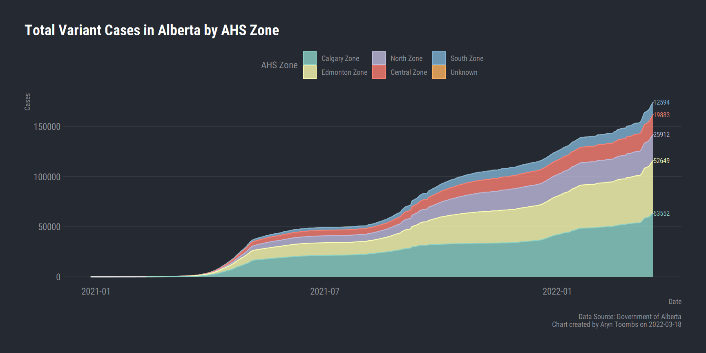
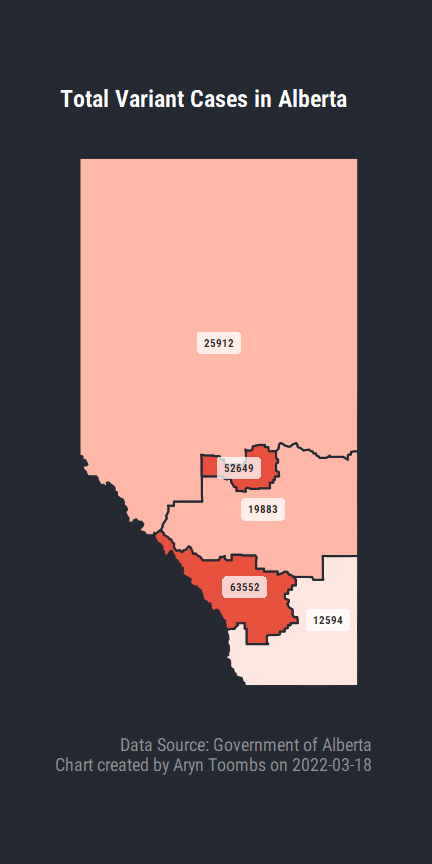

Active VOC cases
4604
VOC Percentage
42.6%
Total VOC cases
6986
Total VOC recovered
2353
Total deaths from VOC
29
VOC specimens screened
21683
Covid-19 variants of concern data current as of Mon, Apr 05, 2021
Variants of Concern Charts

Alberta Health Services and the Government of Alberta Covid-19 tracker began providing active VOC cases by AHS Zone on Mar 29.






The two most current days are not shown on the chart as the delay in identifying VOC cases takes approximately two days.